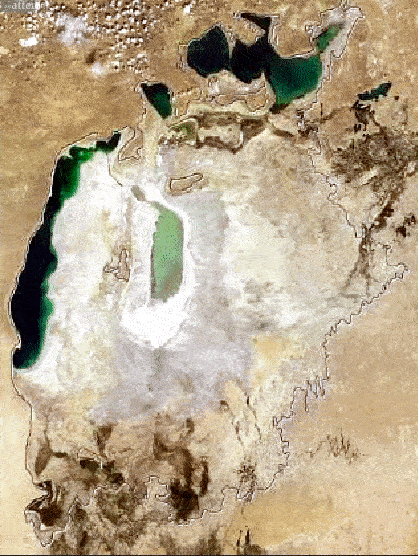

slideview enables interactive exploration of (raster)images side-by-side by providing a mouse-controlled slider. This can be especially useful for comparing images of the same region at different time stamps (change detection).
Installation
You can install the released version of slideview from CRAN with:
install.packages("slideview")Example
### example taken from
### http://www.news.com.au/technology/environment/nasa-images-reveal-
### aral-sea-is-shrinking-before-our-eyes/story-e6frflp0-1227074133835
library(jpeg)
library(raster)
library(slideview)
# 2000
web_img2000 <- "http://cdn.newsapi.com.au/image/v1/68565a36c0fccb1bc43c09d96e8fb029"
jpg2000 <- readJPEG(readBin(web_img2000, "raw", 1e6))
# Convert imagedata to raster
rst_blue2000 <- raster(jpg2000[, , 1])
rst_green2000 <- raster(jpg2000[, , 2])
rst_red2000 <- raster(jpg2000[, , 3])
img2000 <- brick(rst_red2000, rst_green2000, rst_blue2000)
# 2013
web_img2013 <- "http://cdn.newsapi.com.au/image/v1/5707499d769db4b8ec76e8df61933f2a"
jpg2013 <- readJPEG(readBin(web_img2013, "raw", 1e6))
# Convert imagedata to raster
rst_blue2013 <- raster(jpg2013[, , 1])
rst_green2013 <- raster(jpg2013[, , 2])
rst_red2013 <- raster(jpg2013[, , 3])
img2013 <- brick(rst_red2013, rst_green2013, rst_blue2013)
slideView(img2000, img2013, label1 = "before", label2 = "after")
Code of Conduct
Please note that the ‘slideview’ project is released with a Contributor Code of Conduct. By participating in this project you agree to abide by its terms.